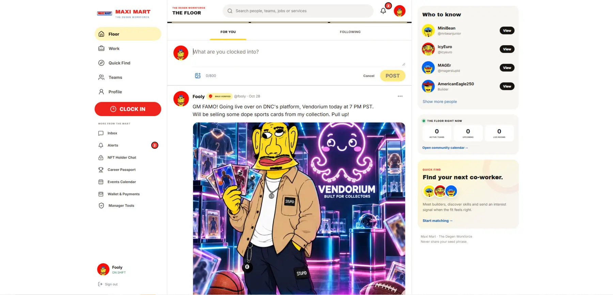
A connected visual world spanning character identity, community products, websites and apparel—built to make an online community immediately recognizable.
Designer & Creative Producer · Los Angeles
Brand identity, digital experiences & physical production.
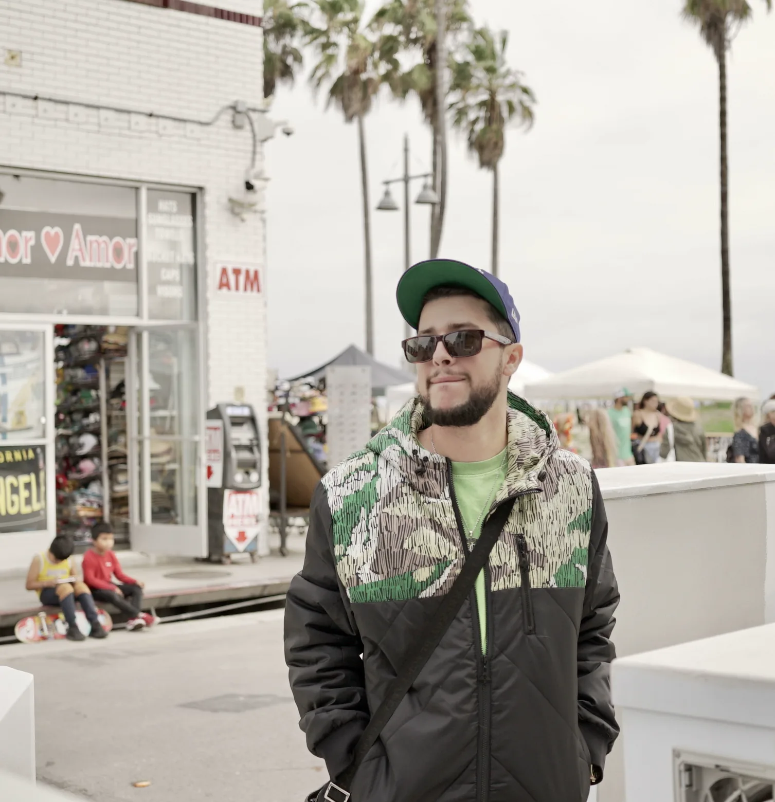
(ABOUT)
I identify what a brand is missing and bring it to life—building identities, websites, campaigns and merchandise that work beyond the screen.
My path started around commercial print production. Since 2017, I’ve built an independent practice across music, events, local businesses and online communities.
I move comfortably between concept and execution: shaping the idea, establishing the visual language and carrying it into the final product.
(SELECTED PROJECTS)

A connected visual world spanning character identity, community products, websites and apparel—built to make an online community immediately recognizable.
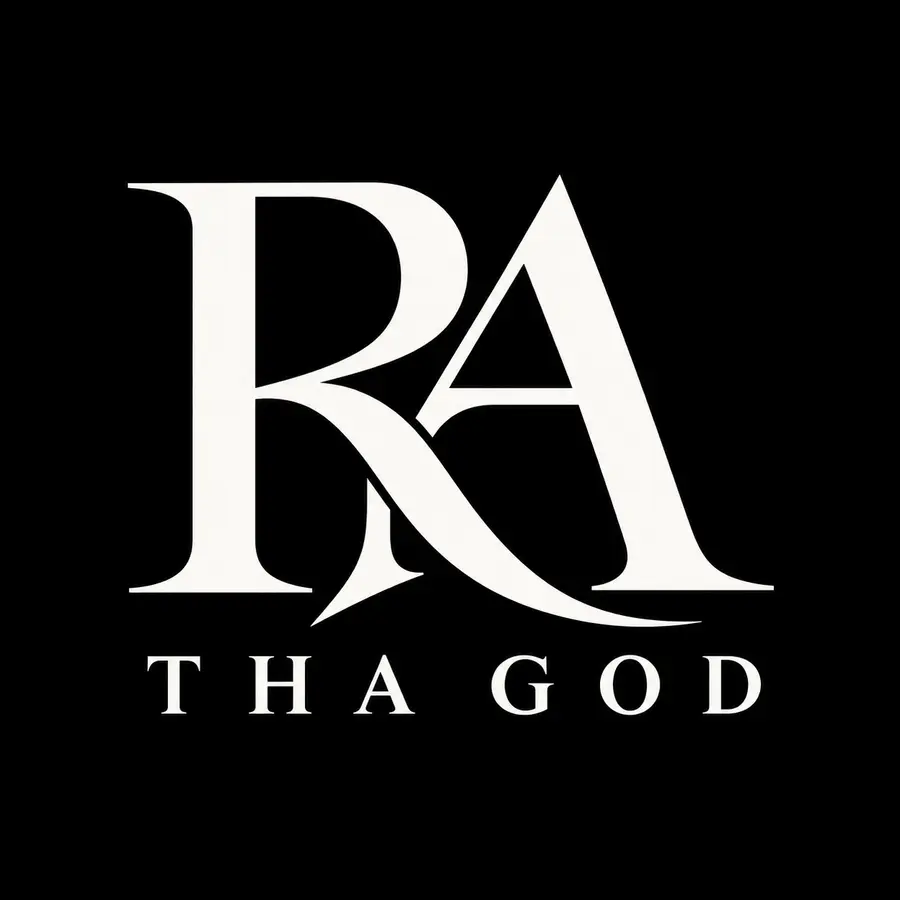
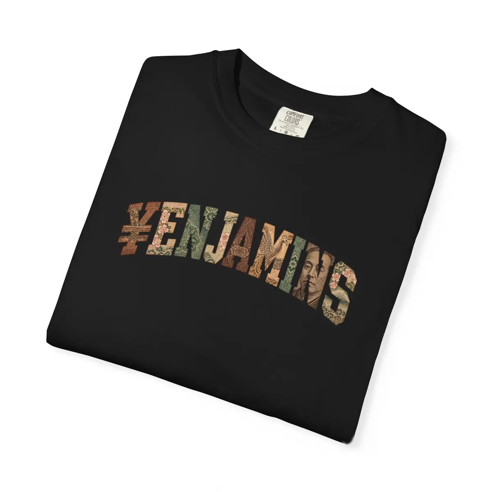
A premium identity and digital home for recording artist RA Tha God, extended across a monogram system, editorial presentation and apparel.
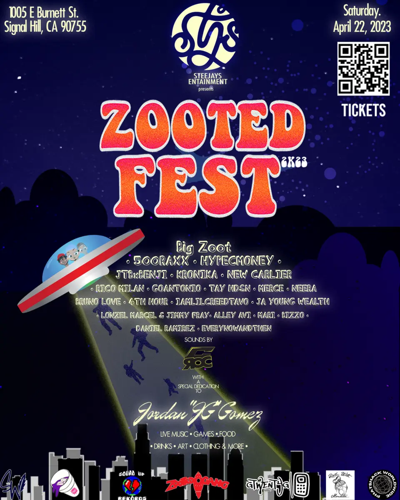
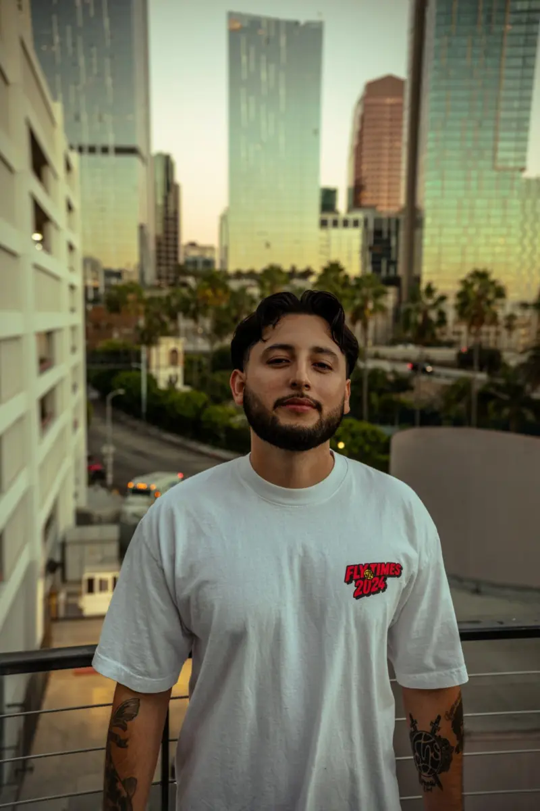
Ongoing creative work for an artist platform and event collective, including event identities, promotional campaigns and merchandise that sold through at events.
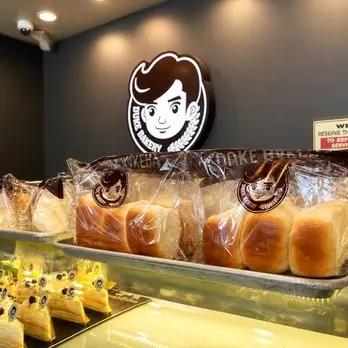
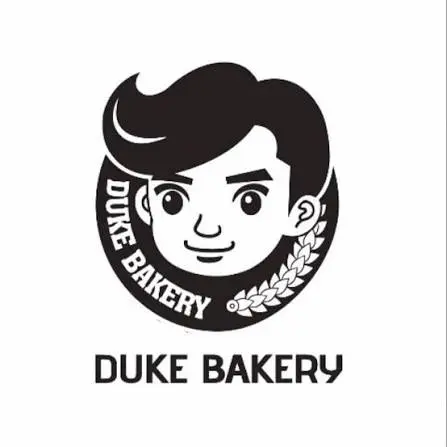
Practical brand applications for a local bakery, including menu design, gift cards and event signage produced for the physical store.
(CAMPAIGNS & APPLICATIONS)
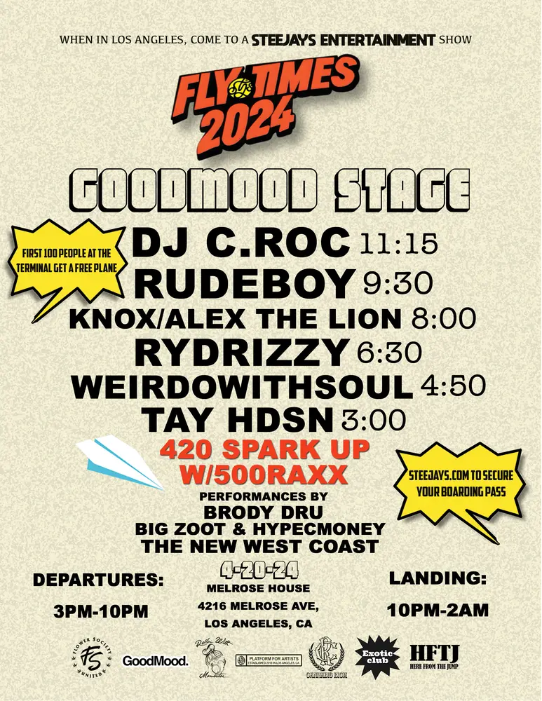
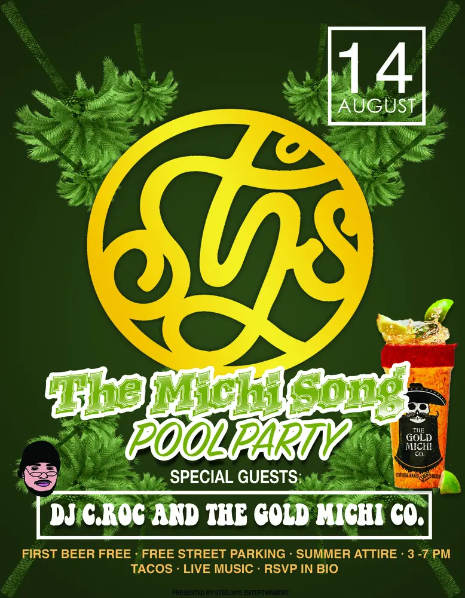
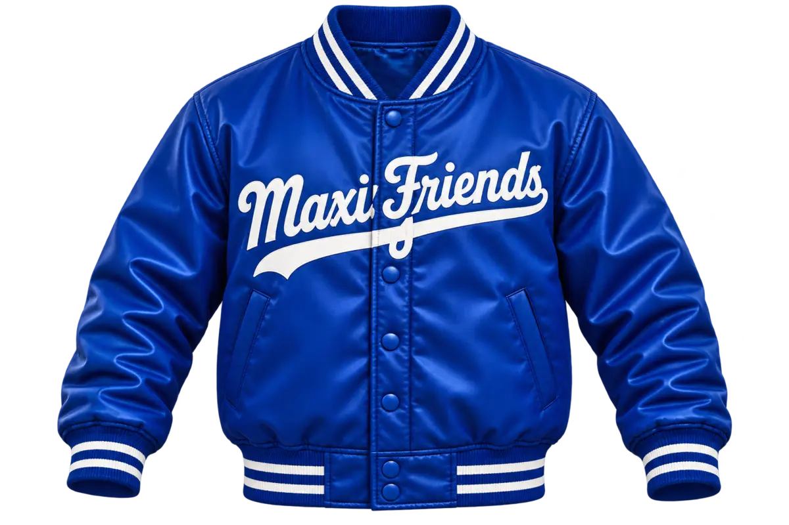
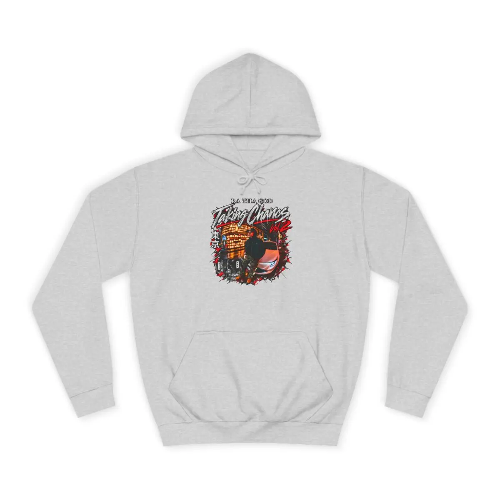
(EXPERIENCE)
Identity, web, campaigns, merchandise, video and client-facing creative direction.
Artist bookings, production schedules, video concepts, shoots, editing, recording and live commerce.
Print handling and delivery, cutting, finishing and exposure to computer-based production.
(SKILLSET)
Identity systems with a clear point of view and room to grow.
Web experiences that communicate a brand through structure, type and motion.
Work designed with the final object, production process and audience in mind.
Campaign, event, video and audio experience from idea through delivery.
(CONTACT)